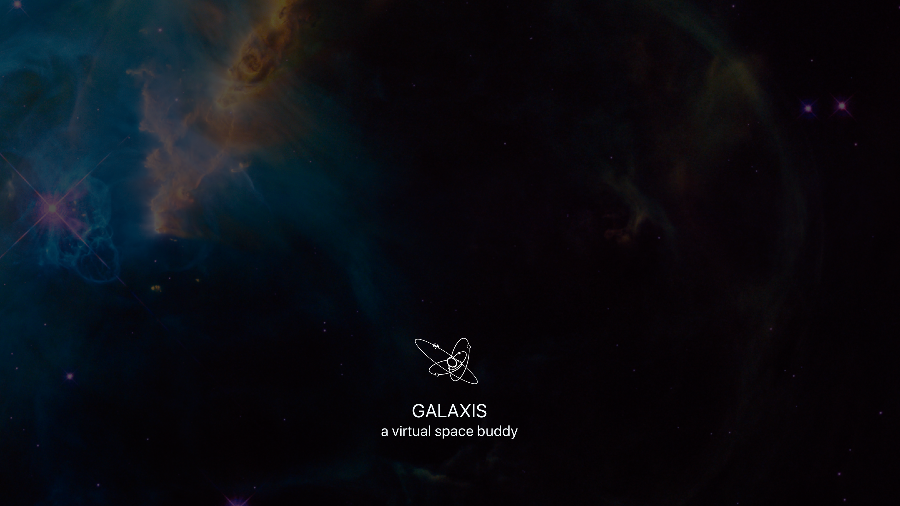

GALAXIS - Winner of 2017 NASA SpaceApps Challenge in Sydney, Australiaachievements
- 1st winner in Sydney, Australia
- Global Nomination in Data Concierge Category
TL;DR
GALAXIS is an open source, AI-driven web application that enables young children learning about space using simple conversational interaction.
See how it works: Watch our demo video
GALAXIS lives here (MVP):
Go to 44thmove on your browser and it works best on Chrome or Firefox. Type or talk to ask your questions. In this prototype, we didn't include the voice interaction on mobile.
This project is part of global hackathon organised annually by NASA. My involvement here is purely out of personal curiosity to sharpen my knowledge on AI-driven conversational design, specifically the usage of Natural Language Understanding (NLU) engine.
what GALAXIS can do
For MVP, we trained GALAXIS with some knowledge about Mars, Earth, and Jupiter. It can also do a quick calculation of planet diameter, distance, object weight against planets gravity and object's flight time. It also knows the ISS location in real time.
project overview
GALAXIS is an AI-driven, open source web application that enables young children to learn about our universe using simple conversational interaction.
Using the power of NLU, and empowered by real time data from various NASA resources, GALAXIS enables young children between the age of 4 to 10 to learn about the planets in our solar system, what space travel is like and why our earth is so special. Think of it like 'Stephen Hawking pocket edition', since GALAXIS is also a bit of a math ninja. By making interaction easy and fun, we hope to encourage children to engage naturally with their virtual space buddy.
Our vision is to reduce barriers to access reliable scientific knowledge using simple conversational interaction, especially for young kids who have yet learned how to read or type. Because you can interact using your own voice, it makes GALAXIS accessible for those with vision impairments as well. With GALAXIS, we strive to educate and inspire the next generation space travellers and innovators of the future.
problem we try to solve
- Difficulty to get access to a reliable source of scientific knowledge
- STEM-related knowledge and information are often written using ‘insider language’ that are too complicated to understand by a young audience
- The Internet is a jungle, not a safe space for young kids to explore unsupervised
our solutions
- We make internet great again (^_*), by creating a safe medium for kids to learn using simple conversational interaction. Giving them control and freedom to explore their curiosity
- Provide answers to complex subject in plain English, making it easier to understand
how
We turned to Artificial Intelligence (AI) to help solve the problem. Utilising an open source NLU (Natural Language Understanding) engine, we created an AI-driven, virtual space buddy for kids between the age of 4 to 10. It’s accessible through a web browser using both voice and text interaction.
unique value propositions
- Easy to access — available on web browser so no installation required*
*In the prototype, we only enable text interaction on mobile - Conversational — Allows voice and text interaction — great for young Padawans who have yet learned how to read or type
- Friendly toward users with visual impairment
- Empowered by dynamic content gathered from various NASA sites and resources
- Trustworthy, as it utilises open source, real-time data gathered from NASA
- Unsupervised learning, the more you interact with Galaxis, the smarter it gets (hopefully :)
what GALAXIS can do
For MVP, we trained GALAXIS with some knowledge about Mars, Earth, and Jupiter. It can also do a quick calculation of planet diameter, distance, object weight against planets gravity and object's flight time. It also knows the ISS location in real time.
my role in the project
As the appointed team lead, I was responsible for the overall project vision including setting achievable goals and action items, features prioritisation and making sure that everyone in the team is having fun during the hackathon weekend.
Our team was four people strong with skillstack in front-end, back-end and API development. I was also responsible for the overall UX design including the user interface and conversational interaction (specifically the intent creation and entity mapping, and designing the contextual interaction in the NLU engine).
tools we used
Api.ai, Google Cloud Voice, Microsoft Cognitive Services, QnA Maker, Custom APIs, Sketch 3, Avocode, HTML5 and CSS3.
. . . . .
#NASA, #SpaceApps, #Hackathon, #chatbot, #NLU, #AI, #VoiceInteraction, #Australia #Sydney #Prototype
. . . . .